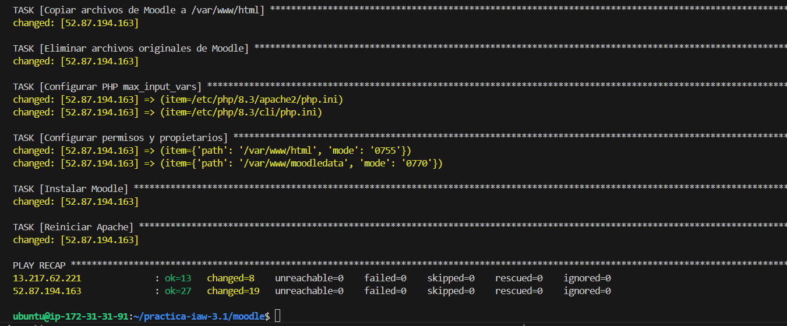
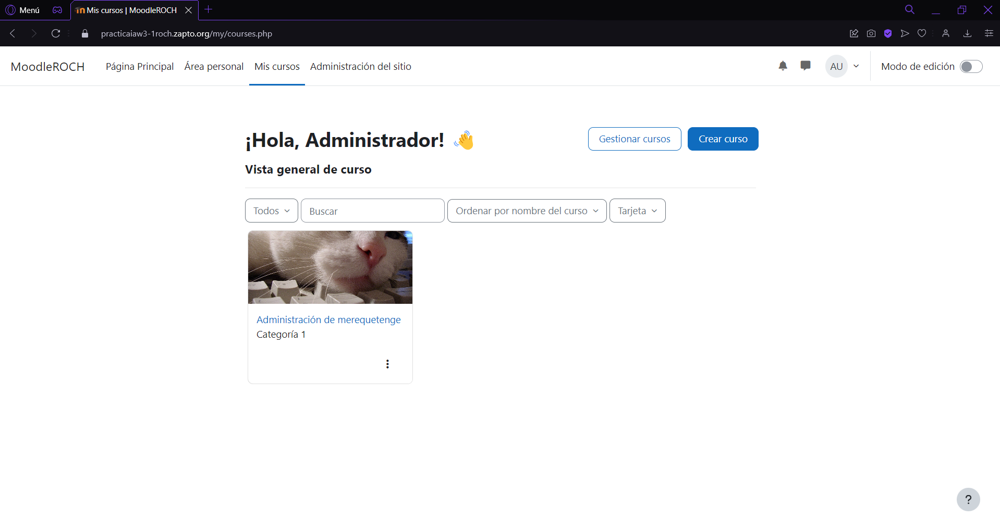
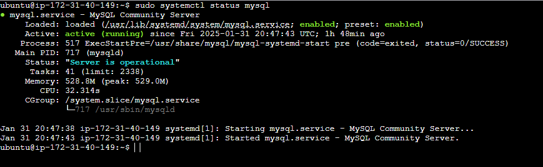
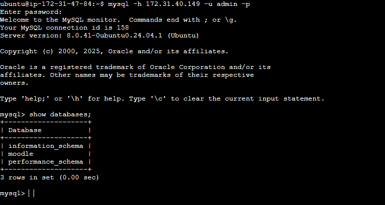
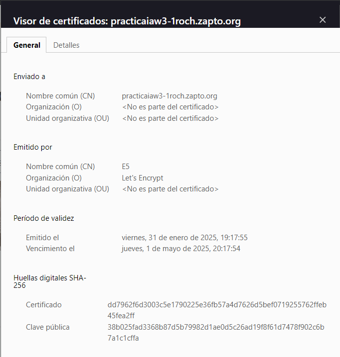

Practica IAW 3.1¶
Implantación de Moodle en Amazon Web Services (AWS) mediante Ansible¶
En esta practica vamos a realizar la implantación de Moodle a traves de una plataforma de computacion en la nube mediante Ansible, en este caso usaremos Amazon Web Services (AWS) como plataforma. Vamos a partir de la base de la Practica 1.8 - Implantación de Moodle en Amazon Web Services (AWS).
Infraestructura necesaria¶
La infraestructura propuesta consta de dos máquinas virtuales, una front-end formada por un servidor web con Apache HTTP Server y una capa de back-end formada por un servidor MySQL.
Estructura de la práctica¶
La estrutura que va tener esta practiva a ser la siguiente:
.
├── README.md
├── templates
│ └── 000-default.conf
└── inventory
│ └── inventory
└── playbooks
│ ├── setup_letsencrypt_https.yml
│ ├── install_lamp_backend.yml
│ ├── install_lamp_frontend.yml
│ ├── deploy_backend.yml
│ └── deploy_frontend.yml
└── vars
│ └── variables.yml
└── main.yml
Contenido de los directorios¶
- El directorio templates tendra el archivo de configuracion
000-default.confcon el siguiente contenido.
ServerSignature Off
ServerTokens Prod
<VirtualHost *:80>
DocumentRoot /var/www/html
DirectoryIndex index.php index.html
ErrorLog ${APACHE_LOG_DIR}/error.log
CustomLog ${APACHE_LOG_DIR}/access.log combined
<Directory "/var/www/html">
AllowOverride All
</Directory>
</VirtualHost>
- El directorio inventory tendra el archivo inventory con los datos de los grupos con sus respectivas ips elasticas y las variables con los datos necesarios para poder hacer ssh.
[frontend]
44.209.220.152
[backend]
50.17.148.42
[all:vars]
ansible_user=ubuntu
ansible_ssh_private_key_file=/home/ubuntu/practica-iaw-3.1/vockey.pem
ansible_ssh_common_args='-o StrictHostKeyChecking=accept-new'
-
El directorio playbooks consta de cinco ficheros de Ansible con la configuracion necesaria para poder desplegar moodle, estos cinco ficheros son:
- install_lamp_frontend.yml
- install_lamp_backend.yml
- deploy_backend.yml
- setup_letsencrypt_https.yml
- deploy_frontend.yml
-
Dentro del directorio vars almacenamos el archvivo de variables de
Ansible. -
Dentro del fichero
main.ymlimportamos los playbooks mencionados previamente para poder realizar un despliegue.
Contenido del install_lamp_frontend¶
Actualizamos la lista de paquetes para asegurarnos de que los paquetes disponibles estén actualizados.
- name: Actualizar lista de paquetes
apt:
update_cache: yes
Actualizamos los paquetes instalados para mantener el sistema al día y eliminar paquetes innecesarios.
- name: Actualizar paquetes
apt:
upgrade: dist
autoremove: yes
Instalamos Apache.
- name: Instalar Apache
apt:
name: apache2
state: present
Habilitamos el módulo rewrite en Apache para permitir la reescritura de URLs.
- name: Habilitar módulo rewrite en Apache
command: a2enmod rewrite
notify: Reiniciar Apache
Copiamos el archivo de configuración de Apache desde una plantilla predefinida.
- name: Copiar archivo de configuración de Apache
copy:
src: /home/ubuntu/practica-iaw-3.1/moodle/templates/000-default.conf
dest: /etc/apache2/sites-available/000-default.conf
owner: root
group: root
mode: '0644'
notify: Reiniciar Apache
Instalamos PHP y los módulos requeridos para permitir la ejecución de aplicaciones PHP.
- name: Instalar PHP y módulos requeridos
apt:
name:
- php
- libapache2-mod-php
- php-mysql
- php-xml
- php-mbstring
- php-curl
- php-zip
- php-gd
- php-intl
- php-soap
- php-mysqli
state: present
Reiniciamos de Apache para aplicar los cambios de configuración.
- name: Reiniciar Apache
systemd:
name: apache2
state: restarted
Eliminamos instalaciones previas de Moodle para evitar conflictos con configuraciones anteriores.
- name: Eliminar instalaciones previas de Moodle
file:
path: /var/www/moodledata
state: absent
Creamos el directorio moodledata con los permisos adecuados para Moodle.
- name: Crear directorio moodledata
file:
path: /var/www/moodledata
state: directory
owner: www-data
group: www-data
mode: '0755'
Modificamos permisos y propietario del directorio web para garantizar el correcto acceso a los archivos.
- name: Modificar propietario y grupo de /var/www/html
file:
path: /var/www/html
state: directory
owner: www-data
group: www-data
recurse: yes
Contenido del install_lamp_backend¶
Instalamos el módulo pymysqlste que permite que Ansible gestione bases de datos MySQL de manera programática.
- name: Instalamos el módulo de pymysql
apt:
name: python3-pymysql
state: present
Se actualiza la lista de paquetes disponibles en el repositorio.
- name: Actualizar lista de paquetes
apt:
update_cache: yes
Se actualizan los paquetes existentes y se eliminan los que ya no son necesarios.
- name: Actualizar paquetes
apt:
upgrade: dist
autoremove: yes
Se instala MySQL Server en el servidor remoto.
- name: Instalar MySQL Server
apt:
name: mysql-server
state: present
Se edita el archivo de configuración de MySQL para permitir conexiones desde cualquier dirección IP, en lugar de restringirlas a 127.0.0.1.
- name: Configurar MySQL para aceptar conexiones remotas
replace:
path: /etc/mysql/mysql.conf.d/mysqld.cnf
regexp: '127.0.0.1'
replace: '0.0.0.0'
Se reinicia MySQL para aplicar los cambios realizados en la configuración.
- name: Reiniciar servicio MySQL
systemd:
name: mysql
state: restarted
Contenido del deploy_backend¶
Si una base de datos con el mismo nombre ya existe, se elimina para garantizar una configuración limpia.
- name: Eliminar base de datos existente si existe
mysql_db:
name: "{{ db.name }}"
state: absent
login_unix_socket: /var/run/mysqld/mysqld.sock
Se crea una nueva base de datos con el nombre especificado en variables.yml.
- name: Crear nueva base de datos para Moodle
mysql_db:
name: "{{ db.name }}"
state: present
login_unix_socket: /var/run/mysqld/mysqld.sock
Si el usuario de la base de datos ya existe, se elimina antes de crearlo nuevamente.
- name: Eliminar usuario de base de datos si existe
mysql_user:
name: "{{ db.user }}"
host: "{{ frontend_private_ip }}"
state: absent
login_unix_socket: /var/run/mysqld/mysqld.sock
Se crea un nuevo usuario para la base de datos de Moodle, con acceso desde cualquier dirección IP y con todos los privilegios sobre la base de datos.
- name: Crear usuario de base de datos para Moodle
mysql_user:
name: "{{ db.user }}"
password: "{{ db.password }}"
host: "%"
priv: "{{ db.name }}.*:ALL"
state: present
login_unix_socket: /var/run/mysqld/mysqld.sock
Contenido del setup_letsencrypt_https¶
Si Certbot fue instalado anteriormente con apt, esta tarea lo elimina para evitar conflictos con la versión instalada mediante snap.
- name: Desinstalar instalaciones previas de Certbot
apt:
name: certbot
state: absent
Se instala Certbot utilizando Snap, asegurando que se obtiene la versión más reciente y compatible con Let's Encrypt.
- name: Instalar Certbot con snap
snap:
name: certbot
classic: yes
state: present
Se solicita y configura el certificado SSL/TLS.
- name: Solicitar y configurar certificado SSL/TLS a Let's Encrypt con certbot
command:
certbot --apache \
-m {{ certbot.email }} \
--agree-tos \
--no-eff-email \
--non-interactive \
-d {{ certbot.domain }}
Contenido del deploy_frontend¶
Se elimina cualquier versión previa del archivo de instalación de Moodle en /tmp.
- name: Eliminar instalaciones previas
file:
path: /tmp/moodle-latest-405.tgz*
state: absent
Se descarga la última versión estable de Moodle desde su sitio oficial.
- name: Descargar código fuente de Moodle
get_url:
url: https://download.moodle.org/download.php/direct/stable405/moodle-latest-405.tgz
dest: /tmp/moodle-latest-405.tgz
Se extrae los archivos de Moodle en el directorio temporal /tmp.
- name: Descomprimir código fuente de Moodle
unarchive:
src: /tmp/moodle-latest-405.tgz
dest: /tmp
remote_src: yes
Se elimina cualquier instalación anterior de Moodle en el directorio web.
- name: Eliminar contenido previo en /var/www/html
file:
path: /var/www/html
state: absent
Movemos los archivos de Moodle al directorio /var/www/html.
- name: Copiar archivos de Moodle a /var/www/html
copy:
src: /tmp/moodle/
dest: /var/www/html/
remote_src: yes
Borramos los archivos extraídos en /tmp para liberar espacio.
- name: Eliminar archivos originales de Moodle
file:
path: /tmp/moodle/
state: absent
Modificamos la configuración de PHP para aumentar el límite de max_input_vars requerido por Moodle.
- name: Configurar PHP max_input_vars
replace:
path: "{{ item }}"
regexp: ';max_input_vars = 1000'
replace: 'max_input_vars = 5000'
loop: "{{ php_config_files }}"
Aseguramos que el servidor web tiene los permisos adecuados sobre los archivos de Moodle.
- name: Configurar permisos y propietarios
file:
path: "{{ item.path }}"
owner: www-data
group: www-data
mode: "{{ item.mode }}"
recurse: yes
loop: "{{ moodle_permisos }}"
Ejecutamos el script de instalación de Moodle con los parámetros definidos en el archivo de variables.
- name: Instalar Moodle
command: >
sudo -u www-data /usr/bin/php /var/www/html/admin/cli/install.php --lang={{ moodle.idioma }} --wwwroot={{ moodle.url }} --dataroot={{ moodle.directorydata }} --dbtype={{ moodle.tipobd }} --dbhost={{ moodle.host }} --dbname={{ moodle.name }} --dbuser={{ moodle.user }} --dbpass={{ moodle.pass }} --prefix={{ moodle.prefijo }} --fullname="{{ moodle.fullname }}" --shortname={{ moodle.shortname }} --summary="{{ moodle.summary }}" --adminuser={{ moodle.admin }} --adminpass={{ moodle.adminpass }} --adminemail={{ moodle.adminemail }} --agree-license --non-interactive
Reiniciamos Apache para aplicar los cambios en la configuración.
- name: Reiniciar Apache
systemd:
name: apache2
state: restarted
Comprobaciones¶
Comprobación de que se ejecuta sin ningun problema.

Comprobación del funcionamiento de Moodle.

Comprobación del estado del MySQL.

Comprobación de que la maquina front-end tiene acceso a mysql.

Comprobación del certificado SSL/TLS.
